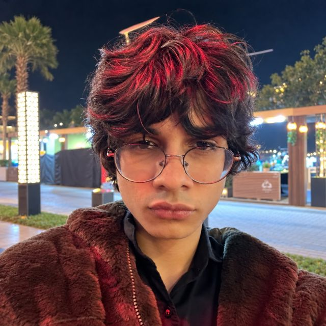

GROWTH STRATEGIST · GAMING · CONTENT · + TECH & CYBER SECURITY
Growth& contentfor gamingbrands.
I research the news, write the posts and plan the funnels for gaming-focused brands on LinkedIn. Gaming is my home turf, and I can run the same playbook for tech and cyber security brands. I study cyber security, so I care about how things work and how they break.
See the case studies ↓Say hi
Every post planned and written as TOFU, MOFU or BOFU.
About
the short versionI read the news, the numbers and the comments.
I’m Adarsh, a B.Tech Computer Science (Cyber Security) student at Bennett University. Day to day I work at Brands Built Right on gaming-focused content: researching what’s happening, turning it into LinkedIn posts with a point of view, and planning what we post and why.
I like both halves of the job. The creative half is hooks, angles and opinions. The analytical half is a weekly sheet that tells me what actually worked. On the tech side I’m studying cyber security and I like knowing how the platforms behind games and the web hold together. The same playbook works for tech and cyber security brands: explain the complicated thing clearly, then build an audience around it.
Experience
~4 months at Brands Built RightAug – Nov 2026. I joined as a researcher, picked up a Python side quest, and ended up running LinkedIn. Here’s the path, in order.
A sharp eye for leads
I find the right people on LinkedIn: ICP criteria, Sales Navigator filters and prospect signals to spot the gaming studios, agencies and decision-makers actually worth reaching.
Your whole outreach, handled
Lead research, personalized messages, prospect warming, Dripify workflows, cold email, SOPs and follow-up. I can run the outreach end to end.
The work
open one, it’s annotatedQuest log
Aug – Nov 2026Results
real numbers onlyAccount: Piryank Agarwal / Brands Built Right on LinkedIn, all of it organic. Someone else ran LinkedIn before me and I took over on 1 Aug. Unless it says otherwise, the numbers below are the stretch I was responsible for: 1 Aug – 13 Nov 2026.
HIGH SCORES · TOP POSTS
LINKEDIN · CUMULATIVE IMPRESSIONS
1 Aug → 13 Nov 2026, organic. From LinkedIn analytics.
DISCOVERY · WHO SAW IT
29% in-network · 71% out-of-network · 75,855 members reached